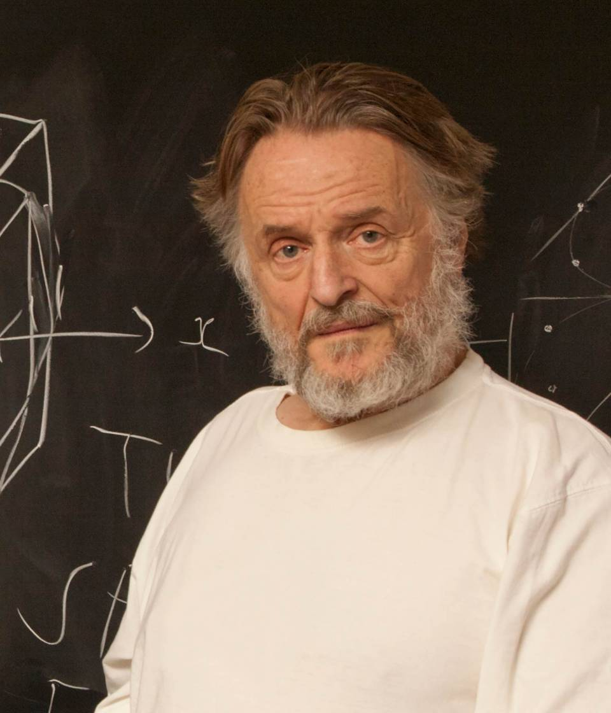
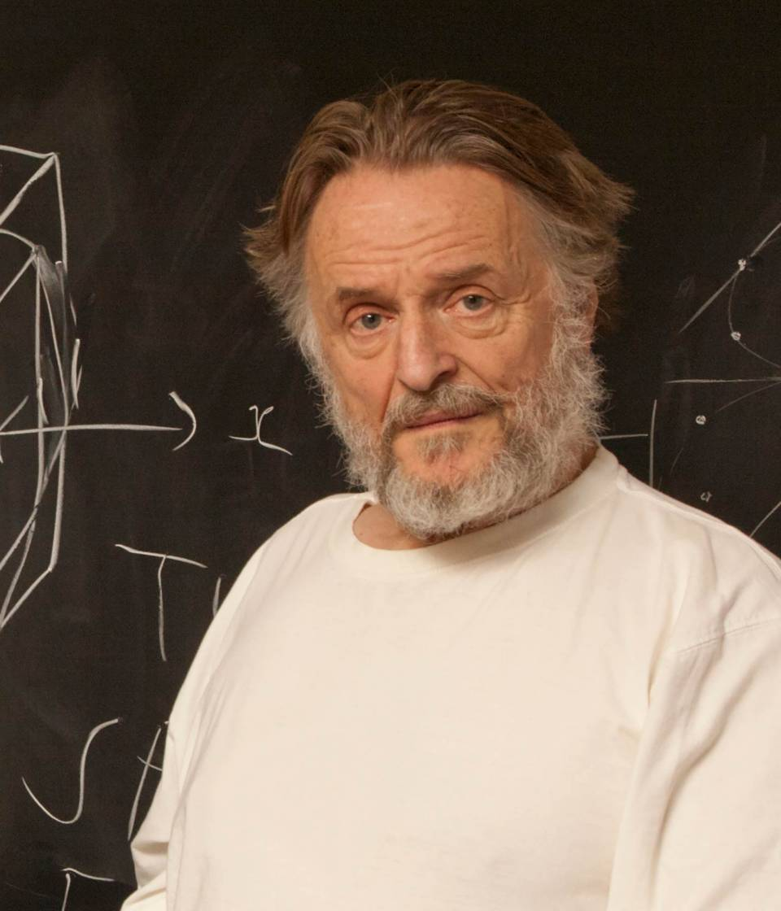
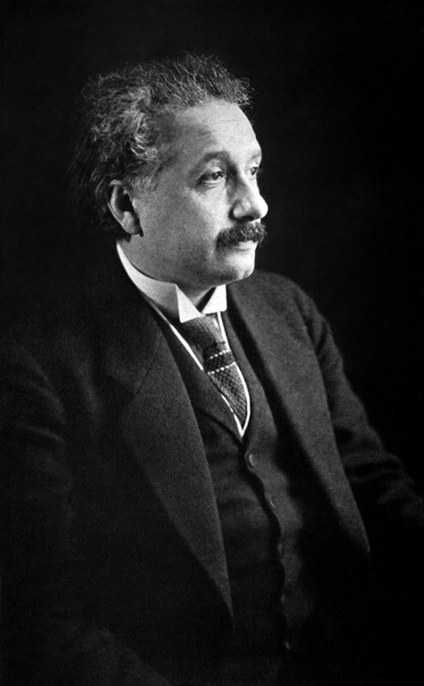
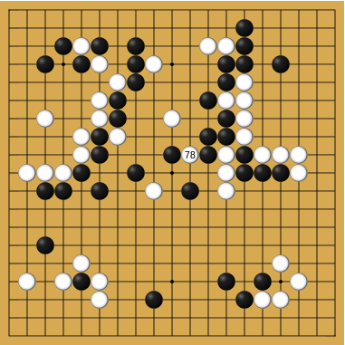

|

|

Figure: ‘Death’ through loneliness in Conway’s game of life. If a cell is surrounded by less than three cells, it ‘dies’ through loneliness.
GREAT AI FALLACY
UNPRECEDENTED COMBINATION OF SCIENCE, SOCIAL SCIENCE, ETC REQUIRED TO DELIVER
Philosophical Essay on Probabilities Laplace (1814a) pg 3
[edit]
|

|
Figure: ‘Death’ through loneliness in Conway’s game of life. If a cell is surrounded by less than three cells, it ‘dies’ through loneliness.
|
|
Figure: ‘Death’ through overpopulation in Conway’s game of life. If a cell is surrounded by more than three cells, it ‘dies’ through loneliness.
|
|
Figure: Birth in Conway’s life. Any position surounded by precisely three live cells will give birth to a new cell at the next turn.
Conway’s game of life has three simple rules.
[edit]

|
|
Figure: Left A Glider pattern discovered 1969 by Richard K. Guy. Right. John Horton Conway, creator of Life (1937-2020).
|
|
|
Figure: Left A Loafer pattern discovered by Josh Ball in 2013. Right. John Horton Conway, creator of Life (1937-2020).

Figure: Laplace’s determinsim in English translation.
Unfortunately, most analyses of his ideas stop at that point, whereas his real point is that such a notion is unreachable. Not so much superman as strawman. Just three pages later in the “Philosophical Essay on Probabilities” (Laplace, 1814b), Laplace goes on to observe:
The curve described by a simple molecule of air or vapor is regulated in a manner just as certain as the planetary orbits; the only difference between them is that which comes from our ignorance.
Probability is relative, in part to this ignorance, in part to our knowledge.

Figure: To Laplace, determinism is a strawman. Ignorance of mechanism and data leads to uncertainty which should be dealt with through probability.
The curve described by a simple molecule of air or vapor is regulated in a manner just as certain as the planetary orbits; the only difference between them is that which comes from our ignorance.
Probability is relative, in part to this ignorance, in part to our knowledge.
Philosophical Essay on Probabilities Laplace (1814a) pg 5
|
|
= available energy + temperature \(\times\) entropy |
Figure: James Watt’s Lap Engine which incorporates many of his innovations to the steam engine, making it more efficient.
|
|

|
|
Figure: Bertrand Russell (1872-1970), Albert Einstein (1879-1955), Norbert Wiener, (1894-1964)
Figure: Brownian motion of a large particle in a group of smaller particles. The movement is known as a Wiener process after Norbert Wiener.

|

|

|
Figure: James Clerk Maxwell (1831-1879), Ludwig Boltzmann (1844-1906) Josiah Willard Gibbs (1839-1903)
Figure: Bernoulli’s simple kinetic models of gases assume that the molecules of air operate like billiard balls.
Figure: Maxwell’s demon opens and closes a door which allows fast particles to pass from left to right and slow particles to pass from right to left. This makes the left hand side colder than the right.
Figure: Maxwell’s Demon. The demon decides balls are either cold (blue) or hot (red) according to their velocity. Balls are allowed to pass the green membrane from right to left only if they are cold, and from left to right, only if they are hot.

Figure: Claude Shannon (1916-2001)
For instance, the temperature at which ice melts is found to be always the same under ordinary circumstances, though, as we shall see, it is slightly altered by change of pressure. The temperature of steam which issues from boiling water is also constant when the pressure is constant.
These two pheomena therefore–the melting of ice and the boiling of water–indicate in a visible manner two temperatures which we may use as points of reference, the position of which depends on the properties of water and not on the conditions of our senses.
Theory of Heat Maxwell (1871) page 3
| bits/min | billions | 2,000 |
|
billion calculations/s |
~100 | a billion |
| embodiment | 20 minutes | 5 billion years |
Figure: Embodiment factors are the ratio between our ability to compute and our ability to communicate. Relative to the machine we are also locked in. In the table we represent embodiment as the length of time it would take to communicate one second’s worth of computation. For computers it is a matter of minutes, but for a human, it is a matter of thousands of millions of years.
[edit]
Figure: Conversation relies on internal models of other individuals.
Figure: Misunderstanding of context and who we are talking to leads to arguments.
Embodiment factors imply that, in our communication between humans, what is not said is, perhaps, more important than what is said. To communicate with each other we need to have a model of who each of us are.
To aid this, in society, we are required to perform roles. Whether as a parent, a teacher, an employee or a boss. Each of these roles requires that we conform to certain standards of behaviour to facilitate communication between ourselves.
Control of self is vitally important to these communications.
The high availability of data available to humans undermines human-to-human communication channels by providing new routes to undermining our control of self.
The consequences between this mismatch of power and delivery are to be seen all around us. Because, just as driving an F1 car with bicycle wheels would be a fine art, so is the process of communication between humans.
If I have a thought and I wish to communicate it, I first of all need to have a model of what you think. I should think before I speak. When I speak, you may react. You have a model of who I am and what I was trying to say, and why I chose to say what I said. Now we begin this dance, where we are each trying to better understand each other and what we are saying. When it works, it is beautiful, but when misdeployed, just like a badly driven F1 car, there is a horrible crash, an argument.
Stories, between humans.
Figure: Fritz Heider and Marianne Simmel’s video of shapes from Heider and Simmel (1944).
[edit]
Figure: Conversation relies on internal models of other individuals.
Figure: Misunderstanding of context and who we are talking to leads to arguments.
Similarly, we find it difficult to comprehend how computers are making decisions. Because they do so with more data than we can possibly imagine.
In many respects, this is not a problem, it’s a good thing. Computers and us are good at different things. But when we interact with a computer, when it acts in a different way to us, we need to remember why.
Just as the first step to getting along with other humans is understanding other humans, so it needs to be with getting along with our computers.
Embodiment factors explain why, at the same time, computers are so impressive in simulating our weather, but so poor at predicting our moods. Our complexity is greater than that of our weather, and each of us is tuned to read and respond to one another.
Their intelligence is different. It is based on very large quantities of data that we cannot absorb. Our computers don’t have a complex internal model of who we are. They don’t understand the human condition. They are not tuned to respond to us as we are to each other.
Embodiment factors encapsulate a profound thing about the nature of humans. Our locked in intelligence means that we are striving to communicate, so we put a lot of thought into what we’re communicating with. And if we’re communicating with something complex, we naturally anthropomorphize them.
We give our dogs, our cats and our cars human motivations. We do the same with our computers. We anthropomorphize them. We assume that they have the same objectives as us and the same constraints. They don’t.
This means, that when we worry about artificial intelligence, we worry about the wrong things. We fear computers that behave like more powerful versions of ourselves that will struggle to outcompete us.
In reality, the challenge is that our computers cannot be human enough. They cannot understand us with the depth we understand one another. They drop below our cognitive radar and operate outside our mental models.
The real danger is that computers don’t anthropomorphize. They’ll make decisions in isolation from us without our supervision, because they can’t communicate truly and deeply with us.
One of the struggles of artificial intelligence is that the term means different things to different people. Our intelligence is precious to us, and the notion that it can be easily recreated is disturbing to us. This leads to some dystopian notions of artificial intelligence, such as the singularity.
Depending on whether this powerful technology is viewed as beneficent or maleficent, it can be viewed either as a helpful assistant, in the manner of Jeeves, or a tyrannical dictator.
Figure: We seem to have fallen for a perspective on AI that suggests it will adapt to our schedule, rather in the manner of a 1930s manservant.
The history of automation and technology is a history of us adapting to technological change. The invention of the railways, and the need for consistent national times to timetable our movements. The development of the factory system in the mills of Derbyshire required workers to operate and maintain the machines that replaced them.
Listening to modern to conversations about artificial intelligence, I think the use of the term intelligence has given rise to an idea that this technology will be the But amoung these different assessments of artificial intelligence is buried an idea, one that
Introduce Linnaeus and the hydra.
[edit]
Figure: The Hamburg Hydra as shown in Seba and Tanjé (1734), engraving by Pieter Tanjé. The hydra was a hoax that was unpicked by Linnaeus in 1735 on his visit to Hamburg on the way to the University of Harderwijk in the Dutch Republic.
Figure: Drawing of the Lenox Globe by the historian for the Magazine of American History in September 1879.
Figure: Detail from the Lenox globe located in the region of China, “hic sunt dracones”
[edit]

Figure: The DeepFace architecture (Taigman et al., 2014), visualized through colors to represent the functional mappings at each layer. There are 120 million parameters in the model.
The DeepFace architecture (Taigman et al., 2014) consists of layers that deal with translation and rotational invariances. These layers are followed by three locally-connected layers and two fully-connected layers. Color illustrates feature maps produced at each layer. The neural network includes more than 120 million parameters, where more than 95% come from the local and fully connected layers.
[edit]

Figure: Deep learning models are composition of simple functions. We can think of a pinball machine as an analogy. Each layer of pins corresponds to one of the layers of functions in the model. Input data is represented by the location of the ball from left to right when it is dropped in from the top. Output class comes from the position of the ball as it leaves the pins at the bottom.
Sometimes deep learning models are described as being like the brain, or too complex to understand, but one analogy I find useful to help the gist of these models is to think of them as being similar to early pin ball machines.
In a deep neural network, we input a number (or numbers), whereas in pinball, we input a ball.
Think of the location of the ball on the left-right axis as a single number. Our simple pinball machine can only take one number at a time. As the ball falls through the machine, each layer of pins can be thought of as a different layer of ‘neurons.’ Each layer acts to move the ball from left to right.
In a pinball machine, when the ball gets to the bottom it might fall into a hole defining a score, in a neural network, that is equivalent to the decision: a classification of the input object.
An image has more than one number associated with it, so it is like playing pinball in a hyper-space.
%pip install --upgrade git+https://github.com/sods/odsFigure: At initialization, the pins, which represent the parameters of the function, aren’t in the right place to bring the balls to the correct decisions.
Figure: After learning the pins are now in the right place to bring the balls to the correct decisions.
Learning involves moving all the pins to be in the correct position, so that the ball ends up in the right place when it’s fallen through the machine. But moving all these pins in hyperspace can be difficult.
In a hyper-space you have to put a lot of data through the machine for to explore the positions of all the pins. Even when you feed many millions of data points through the machine, there are likely to be regions in the hyper-space where no ball has passed. When future test data passes through the machine in a new route unusual things can happen.
Adversarial examples exploit this high dimensional space. If you have access to the pinball machine, you can use gradient methods to find a position for the ball in the hyper space where the image looks like one thing, but will be classified as another.
Probabilistic methods explore more of the space by considering a range of possible paths for the ball through the machine. This helps to make them more data efficient and gives some robustness to adversarial examples.
|

|
|
Figure: A vehicle operated by Uber ATG was involved in a fatal crash when it killed pedestrian Elaine Herzberg, 49.
Figure: Data driven and mechanistic models have separated since the origin of the field. Accelerate science is about bringing these two modalities back together.
https://uu.se/en/research/ai4research/
|
|
|
|
|
|
One thing is I can live with doubt, and uncertainty and not knowing. I think it’s much more interesting to live with not knowing that to have an answer that might be wrong.
[edit]
For more information on these subjects and more you might want to check the following resources.